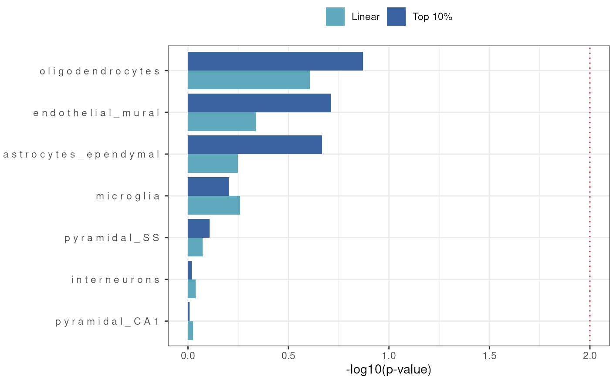

Plot barplot of enrichment results - plotting -log10 (p-value) but cut-off significance is based on FDR where if either linear or top10 FDR threshold the result will be plotted
Source:R/results_barplot.R
results_barplot.RdPlot of cell-type enrichment results from celltype_associations_pipeline.
Usage
results_barplot(
merged_results,
title = NULL,
y_lab = NULL,
x_lab = "-log10(p-value)",
fdr_thresh = 0.05,
y_var = "Celltype",
x_var = "-log10p",
fill_var = "EnrichmentMode",
fill_cols = c("#60A9BD", "#3A62A0"),
horz_line_p = 0.01,
sort_celltypes_by = "Top 10%",
show_plot = TRUE,
height = 5,
width = 7,
dpi = 300,
save_path = file.path(tempdir(), "MAGMA_Celltyping.barplot.jpg")
)Arguments
- merged_results
Enrichment results generated by celltype_associations_pipeline and merged by merge_results.
- title
Plot title.
- y_lab
Plot y-axis label.
- x_lab
Plot x-axis label.
- fdr_thresh
FDR filtering threshold.
- y_var
y-axis variable.
- x_var
x-axis variable.
- fill_var
Fill variable.
- fill_cols
The two colours to use for the fill param (Vector).
- horz_line_p
add dashed line for a p-value cut-off - default of 0.01
- sort_celltypes_by
Sort the order of the cell types in the plot by the enrichment results. Choose to sort by Top 10% or Linear results or set to NULL to avoid sorting. Default is Top 10%.
- show_plot
Whether to print the plot.
- height
Plot height.
- width
Plot width.
- dpi
Plot resolution. Also accepts a string input: "retina" (320), "print" (300), or "screen" (72). Only applies when converting pixel units, as is typical for raster output types.
- save_path
Path to save plot to.
Examples
MAGMA_results <- MAGMA.Celltyping::enrichment_results
merged_results <- MAGMA.Celltyping::merge_results(MAGMA_results)
#> Saving full merged results to ==> /tmp/RtmpEkCLL9/MAGMA_celltyping./.lvl1.csv
bar <- MAGMA.Celltyping::results_barplot(
merged_results = merged_results,
fdr_thresh = 1)
#> 14 results @ FDR < 1
